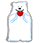

Klemin: u něho bude zabíjačka, tak si ho předcházejte. Vyznačuje se tím, že na význačných místech vyznačuje svoji význačnost obzvláště nechutným způsobem. Význačnosti zdar!
Klemin: u něho bude zabíjačka, tak si ho předcházejte. Vyznačuje se tím, že na význačných místech vyznačuje svoji význačnost obzvláště nechutným způsobem. Význačnosti zdar!Pokud jste už někdy zažili přípravu aviváže, napjatě pozorovali tajemné pochody uvnitř panáka, kdy spolu zelená a bílá nejprve bojují na život a na smrt, aby poté splynuly v milostné křeči a vydaly plod své vzájemné náklonnosti, pokud jste už zažili tu legraci, kdy si celá hospoda nemá co dát do kafe, protože jste vykoupili všechna mlíčka a nezasvěcení se zhnuseně odvracejí od vaší rozdováděné skupinky, aby po krátkém váhání okusili a blaženě zamlaskali, zkrátka, pokud vám už někdy onen lahodný nápoj prošel útrobami, pak jistě chápete, že tento elixír života musí mít svůj funclub. No a také pochopitelně tušíte, co je to, proboha, za lidi?!
Aviváž club je spolek vyznavačů uvedeného nápoje, kteří si dali za úkol šířit jeho slávu do všech koutů světa. Jde o samé významné osobnosti. Jmenujme si některé:
Harry: první věrozvěst, který donesl zprávu o bájném nektaru do našich barbarských končin. Jeho trávicí soustava je zřejmě vyrobena ze slitin titanu s ochrannou teflonovou vrstvou. Tato chodící a sportující destilační aparatura má totiž neskutečnou výdrž.
Štěpoš: náš webmaster, jinak také ďábel našeptávač. Kromě internetu se věnuje své stolici, a to zásadně několikrát denně.
Radeck: herec, který se v opilosti přizdobuje plesovými dekoracemi, popřípadě je rozvěšuje po plotech v okolí kulturního domu. Má příšerný smích.
Klemin: u něho bude zabíjačka, tak si ho předcházejte. Vyznačuje se tím, že na význačných místech vyznačuje svoji význačnost obzvláště nechutným způsobem. Význačnosti zdar!
Ťápoš: hudebně velmi nadaný pič aviváže, který na oltář muziky přestal klást oběť z nejtěžších. Rozhodl se totiž pro ukončení celibátu. Dámy, pokud jásáte, tak nemusíte, Jiří je totiž zadán!!! :\(
Brťas: typický příklad člověka v nesnázích. Oběť svého libida. Nekontroluje se za střízliva, natož v podroušenosti. To pak přítomné osoby ženského pohlaví vyzývá k obcování přímými otázkami. Většinu z nich však na těchto stránkách nelze publikovat.
Pepe: člověk, kterému alkohol nic neříká. Žije v ústraní, věnuje se rodině a zahrádce. Protože má ale ostatní členy rád, tak s nimi na nějakou tu kofolu občas zajde. A mimochodem, to, jak mě Harry nedávno vedl domů, bylo proto, že jsem neměl brýle a byla už dost tma.
Nesmíme také zapomenout na spoustu dalších, kteří bez nároku na odměnu z pouhého nadšení konají každodenní misionářskou práci: Martin, Martina, Bařenka, Janička, Jituška, Zuzka, Terezka, Gabča, Anýsek...
Co máme v plánu? Sledujte naše stránky a nechejte se překvapit.